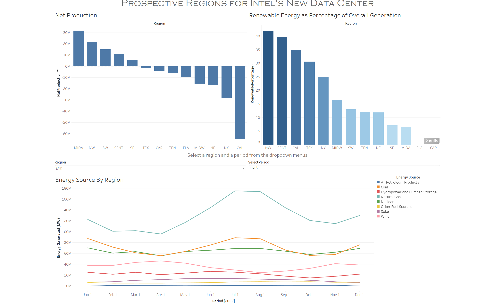

Evaluate Capacity
Identify regions that generate more electricity than they demand.
Business Intelligence • Tableau
A Tableau dashboard evaluating regional energy surplus, renewable generation, and electricity production trends to support a hypothetical Intel data center location decision.
This project used regional electricity production data to support a hypothetical decision about where Intel should locate a new data center. Because data centers require large and continuous supplies of electricity, the analysis focused on identifying regions that produced more electricity than they consumed and regions that relied heavily on renewable energy sources.
I used Tableau to create a decision-support dashboard that combined high-level regional comparisons with an interactive view of energy generation over time. The final dashboard was designed to help a stakeholder compare regional energy capacity, sustainability, and generation patterns before selecting a preferred location.
Intel was considering potential locations for a new data center. Since data centers consume substantial amounts of electricity, a suitable region needed to demonstrate both sufficient generation capacity and a favorable energy mix.
The dashboard was designed to answer the following business question:
Which region provides the strongest combination of energy surplus and renewable electricity generation for a new Intel data center?
Identify regions that generate more electricity than they demand.
Compare the proportion of regional electricity generated from renewable sources.
Allow users to examine how electricity production changes across regions, energy sources, and time periods.
Use the combined evidence to recommend the strongest candidate region.
The project used two primary datasets. One supported regional comparisons, while the other provided more detailed generation data by source and time.
This dataset contained region-level measures related to electricity demand, generation, and renewable energy production.
This dataset contained more granular information about the amount of electricity generated by individual energy sources.
Balancing authorities coordinate electricity exchange between providers and regions to help maintain a reliable balance between electricity supply and demand.
Before assembling the final dashboard, I created four individual Tableau worksheets. Each visualization was selected to address a different part of the business decision.
A bar chart compared the difference between total electricity generation and total electricity demand by region.
SUM([Net Generation]) - SUM([Demand])
A positive value indicated that a region generated more electricity than it consumed, while a negative value indicated that it depended on electricity imported from elsewhere.
A second bar chart compared renewable energy production as a percentage of total net generation.
SUM([Renewable Energy]) / SUM([Net Generation])
The renewable energy measure combined the renewable sources available in the regional dataset, including hydropower, solar, and wind generation.
A treemap displayed the relative amount of electricity generated by each utility source. The size of each section represented the source's contribution to total generation.
This allowed users to quickly identify the dominant energy sources represented in the data.
A line chart showed the amount of electricity generated from different sources over time for a selected region.
Users could filter the chart by region and change the time aggregation between day, week, and month.
The four worksheets were combined into a single dashboard that presented both summary-level and detailed views of the energy data. The layout allowed a user to begin with broad regional comparisons and then investigate electricity generation patterns for an individual region.

The net-production chart identifies which regions generate more electricity than they consume and therefore may be better positioned to support additional demand.
The renewable-percentage chart highlights regions whose electricity generation relies more heavily on renewable sources.
The treemap reveals which generation sources make up the largest share of the available electricity supply.
The interactive line chart allows the user to select a region and evaluate how different energy sources perform over daily, weekly, and monthly periods.
The Northwest generated more electricity than it consumed, indicating that the region had an energy surplus within the available data.
The region relied heavily on renewable electricity sources, making it attractive from a sustainability perspective.
When energy capacity and renewable generation were evaluated together, the Northwest provided the strongest balance of the regions considerd.
Based on these indicators, I recommended the Northwest as the most suitable region for Intel's hypothetical data center.
Some regions generated more electricity than they consumed, while others relied more heavily on electricity supplied from outside the region.
A region's total electricity output needed to be considered separately from the proportion supplied by renewable sources.
The treemap showed that regions with similar production totals could rely on very different combinations of energy sources.
Region and time-period filters made it possible to move beyond a static comparison and examine changes in generation patterns.
The dashboard addressed electricity availability and renewable energy use, but a real data center location decision would require additional financial, environmental, and operational considerations.
This project demonstrated that effective business intelligences involves more than creating individaul visualizations. The larger challenge was identifying which measures directly addressed the business question and arranging those measures into a dashboard that supported a clear decision.
Creating calculated fields for net production and renewable energy percentage transformed the raw data into metrics that were more useful for evaluating potential data center locations. The dashboard then combined those high-level indicators with an interactive view of generation by source and time.
The project also reinforced the importance of separating analytical evidence from the final recommendation. The dashboard allowed users to examine the underlying comparisons, while the recommendation summarized the region that best balanced energy capacity and sustainability within the available data.
A future version could incorporate electricity costs, carbon intensity, infrastructure capacity, land availability, regulatory incentives, and environmental constraints to create a more complete site-selection model.